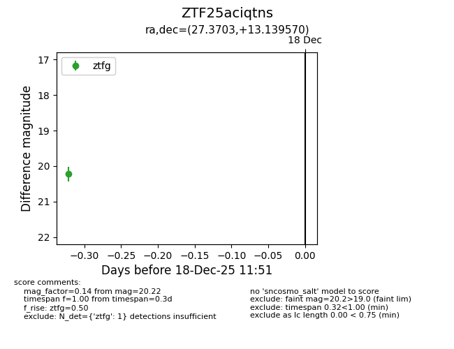
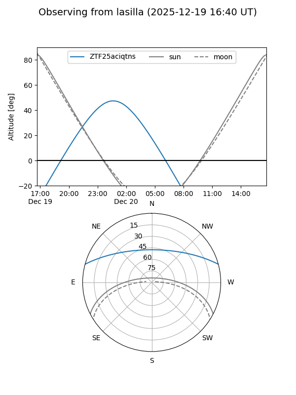
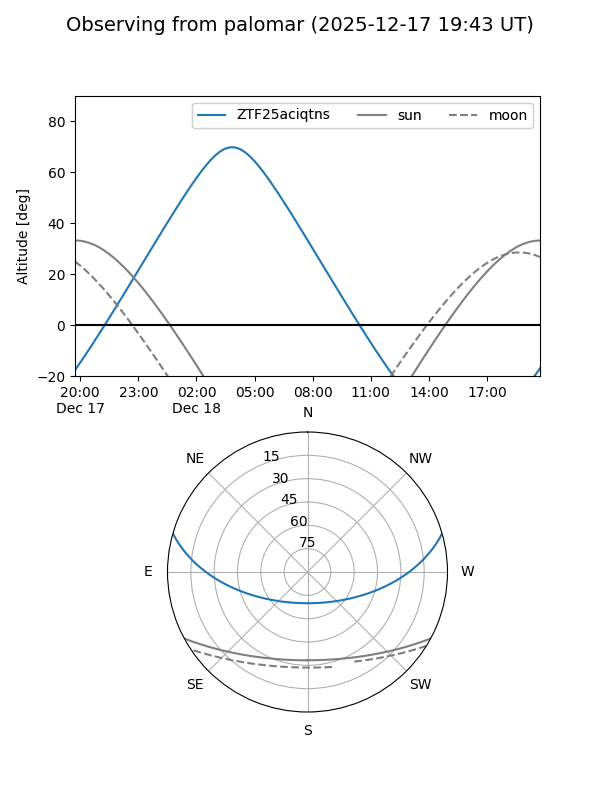
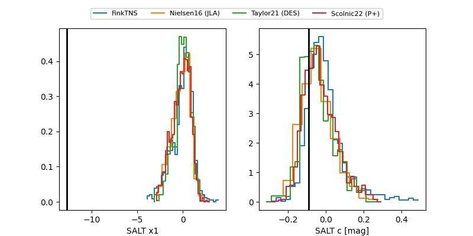

ZTF25aciqtns
Target ZTF25aciqtns at 2025-12-20 03:19
Aliases and brokers:
FINK: fink-portal.org/ZTF25aciqtns
Lasair: lasair-ztf.lsst.ac.uk/objects/ZTF25aciqtns
ALeRCE: alerce.online/object/ZTF25aciqtns
alt names
ZTF25aciqtns (ztf,fink_ztf)
Coordinates:
equatorial (ra, dec) = 27.3703,+13.13957
equatorial (HMS+DMS) = 01:49:28.88,+13:08:22.45
galactic (l, b) = (144.0366,-47.33969)
Flags:
Photometry:
last ztfg=20.45
2 ztfg detections
Lightcurve

Visibility


Additional plots
